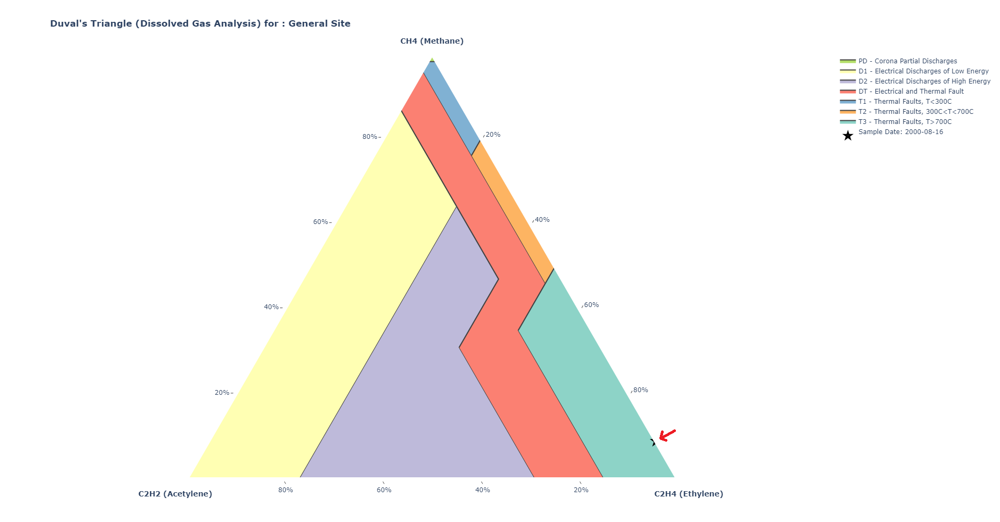

Python library for generating Duval's Triangle plots — Dissolved Gas Analysis for power transformer diagnostics.
Duval's Triangle is a ternary plot that visualises the relative concentrations of methane (CH4), acetylene (C2H2), and ethylene (C2H4) dissolved in transformer oil. Different regions of the triangle correspond to distinct fault types, making it a standard diagnostic tool in power transformer condition monitoring.

Generate publication-ready Duval's Triangle plots from gas concentration data.
Seven standard zones: PD, D1, D2, DT, T1, T2, and T3, each filled with a distinct colour.
Adjust layout dimensions, axis titles, marker symbols, and equipment labels.
Built on Plotly — interactive, zoomable figures that render in Jupyter notebooks and browsers.
pip install duvals-triangle-plotter==1.0# concentrations in ppm
methane = [0.09]
acetylene = [0.0]
ethylene = [0.91]
date = "2000-08-16"
# create a scatterternary trace
trace = dtp.get_duval_points_traces(
methane, acetylene, ethylene, date
)
# generate the figure with fault regions
fig = dtp.get_duvals_triangle_plot(
[trace], show_plot=True
)get_duval_points_traces()
Build a Plotly scatterternary trace dict from gas
concentration data.
| Parameter | Type | Description |
|---|---|---|
methane_points_list |
list[float] |
CH4 concentrations in ppm |
acetylene_points_list |
list[float] |
C2H2 concentrations in ppm |
ethylene_points_list |
list[float] |
C2H4 concentrations in ppm |
date |
str |
Label or date for the sample (shown in legend and hover) |
| Returns | Description |
|---|---|
dict |
A Plotly scatterternary trace |
get_duvals_triangle_plot()Generate a complete Duval's Triangle Plotly figure with fault regions and data traces.
| Parameter | Type | Default | Description |
|---|---|---|---|
duval_points_list |
list[dict] |
— | List of trace dicts from get_duval_points_traces |
show_plot |
bool |
False |
If True, display the figure immediately |
equipment_name |
str |
"General Site" |
Transformer or site name for the plot title |
| Returns | Description |
|---|---|
go.Figure |
A Plotly Figure with fault regions and data points |
Each region of Duval's Triangle corresponds to a specific fault type identified from the relative gas concentrations:
| Label | Fault Type | Description |
|---|---|---|
| PD | Corona / Partial Discharges | Low-energy discharges in gas-filled cavities — early sign of insulation aging. |
| D1 | Low-Energy Discharges | Sparking or arcing from poor connections or floating components. |
| D2 | High-Energy Discharges | Sustained arcing that produces large gas volumes and rapid degradation. |
| DT | Mixed Electrical & Thermal | Combined discharge and thermal decomposition. |
| T1 | Thermal Fault < 300 °C | Low-temperature overheating from overload or poor cooling. |
| T2 | Thermal Fault 300–700 °C | Medium-temperature hot spots in core or windings. |
| T3 | Thermal Fault > 700 °C | High-temperature overheating from sustained arcing or severe faults. |
Duval's Triangle is one of the most widely used graphical methods in Dissolved Gas Analysis. Compared to other DGA interpretation techniques:
| Method | Visual | Standardised | Easy to automate |
|---|---|---|---|
| Duval's Triangle | Yes | Yes | Yes |
| IEC Ratio Method | No | Yes | Yes |
| Key Gas Method | Yes | No | No |
| Roger's Ratio | No | Yes | Yes |